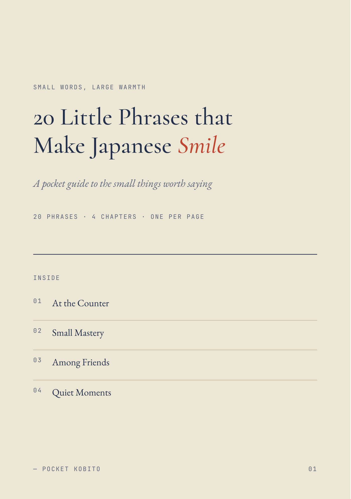

フレーズ20の表紙(実物)

フレーズ20の中身1ページ(実物)

| 確認項目 | 結果 |
|---|---|
| Gumroadアカウント | 存在・稼働中(Poop Break販売中) |
| フレーズ20の中身(20フレーズ+PDF27p) | 完成済み |
| フレーズ20のGumroad出品 | 未出品(たまごさんの1手待ち) |
| なんでやねん30の購入リンク | shop.htmlの購入ボタンが#のまま未接続 |
| LINE公式アカウント | 開設の証跡なし(構想段階) |
| LINEスタンプ鬼嫁ちゃん | 審査リクエスト1手前(769番で別途進行中) |